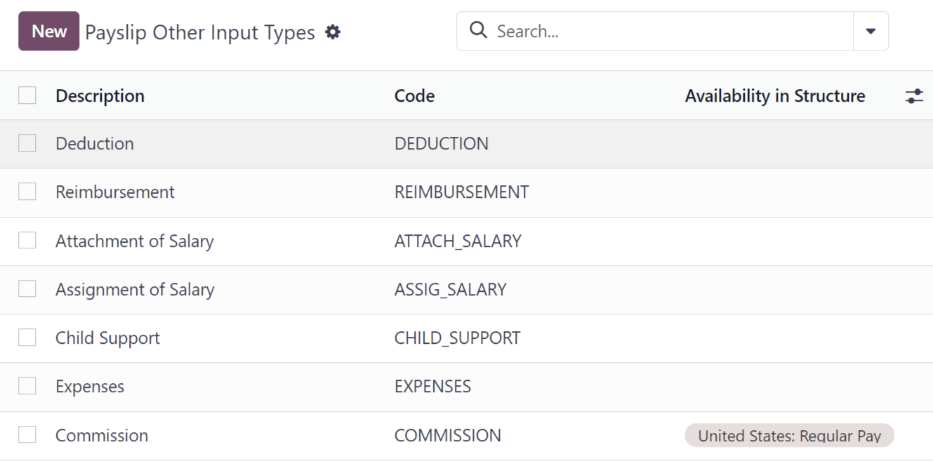
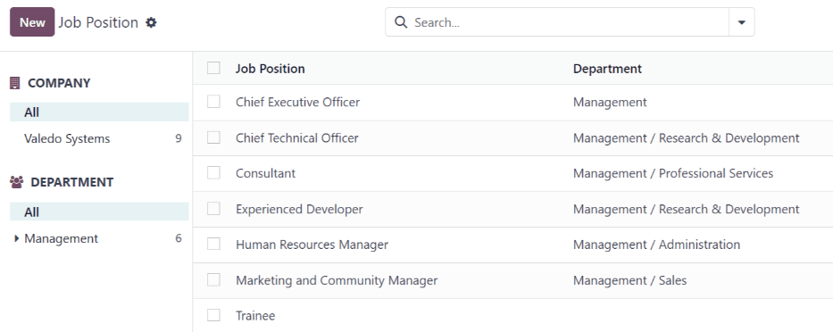

工资¶
Odoo Payroll is used to process work entries and create payslips for employees. Payroll works in conjunction with other Odoo apps, such as Employees, Time Off, Attendances, and Planning.
The Payroll app helps ensure there are no issues or conflicts when validating work entries. It also handles country-specific localizations to ensure payslips follow local rules and taxes, and allows for salary assignments.
设置¶
Configure the Payroll app by navigating to . The various settings for accounting, localizations, time off, alerts, and payslips are specified here.
会计¶
The accounting section of the configuration menu relates to three options:
Payroll Entries: enable this option to post payroll slips in accounting.
Payroll SEPA: enable this option to create SEPA payments.
Batch Account Move Lines: enable this option to have a single account move line created from all the accounting entries from the same period. This disables the generation of single payments.
本地化¶
Localizations are country-specific settings pre-configured in Odoo at the creation of the database, which account for all taxes, fees, and allowances for that particular country.
The Localization section of the Payroll app Settings page may include specific settings that need to be set for the specific locality. This selection also provides a detailed view of all benefits provided to employees.
The settings and options shown in this section varies, depending on the localization enabled for the database.
警告
It is not recommended to alter the localization settings, unless specifically required.
注解
Odoo can handle a multi-company configuration. This is generally done when there is a main company or office location, such as a headquarters, and there are other offices/branches around the country or globe, that fall under that main company or headquarters. In Odoo, each company, including the headquarters, would be set up as their own company/branch using the multi-company method.
Each individual company can have a different localization setting configured for that specific company, since company locations can vary and be located anywhere in the world, where rules and laws differ.
For more information on companies, refer to the Companies documentation, which covers how to set up companies.
休息时间¶
Deferred Time Off: if time off is taken after payslips are validated, the time off needs to be applied to the following pay period. Select the person responsible for validating these specific time off situations using the drop-down menu in the Responsible field.
Example
An employee is paid on the 15th of the month and the last day of the month. Payslips are typically processed a day before.
If an employee’s payslip is approved and processed on the 30th, but that same employee takes an unexpected sick day on the 31st, the time off needs to be logged.
Since the employee is already paid for a regular work day on the 31st, to keep the time off balances correct, the sick day is moved/applied to the 1st of the next month (the next pay period).
工资¶
Contract Expiration Notice Period: enter the number of Days before a contract expires, and Odoo notifies the responsible person about the upcoming expiration at that time.
Work Permit Expiration Notice Period: enter the number of Days before a work permit expires, and Odoo notifies the responsible person about the upcoming expiration at that time.
Payslip PDF Display: enable this option to have payslips display a PDF file on the payslip form.
合同¶
In order for an employee to be paid, they must have an active contract for a specific type of employment. Creating and viewing contract templates, and creating and viewing employment types, is possible from this section of the configuration header menu.
模板¶
Contract templates are used with the Recruitment application when sending an offer to a candidate. The contract template forms the basis of an offer, and can be modified for specific candidates or employees, when necessary. If a contract template is created or modified in the Payroll application, the changes are also reflected in the Recruitment application.
重要
To access contract templates, the Salary Configurator (hr_contract_salary) module must be
installed.
To view all the current contract templates in the database, navigate to .
On the Contract Templates page, all current contract templates appear in a list view. To view the details of a contract template, click anywhere on the line to open the contract form. The contract template can be modified from this form. Proceed to make any desired changes to the contract.
To create a new contract template, click the New button. Then, enter the following information on the blank contract template form that appears:
Contract Reference: enter a brief description for the template. This should be clear and easily understood, as this name appears in the Recruitment application, as well.
Working Schedule: select the desired working schedule the contract applies to from the drop-down menu. If a new working schedule is needed, create a new working schedule.
Work Entry Source: select how the work entries are generated. Choices are either:
Working Schedule: work entries are generated based on the selected working schedule.
Attendances: work entries are generated based on the employee’s attendance, as they are logged in the Attendances application. Refer to the Attendances documentation for information on checking in and out.
Planning: work entries are generated based on the employee’s planning in the Planning application.
Salary Structure Type: select the salary structure type from the drop-down menu.
Department: select the department the contract template applies to from the drop-down menu. If blank, the template applies to all departments.
Job Position: select the job position the contract template applies to from the drop-down menu. If blank, the template applies to all job positions.
Wage on Payroll: enter the monthly wage in the field.
Contract Type: select the type of contract from the drop-down menu. This list is the same as the Employment Types.
HR Responsible: select the employee responsible for validating contracts, using this template, from the drop-down menu.
New Contract Document Template: select a default document that a new employee has to sign to accept an offer.
Contract Update Document Template: select a default document that a current employee has to sign to update their contract.
Salary information tab¶
Wage Type: select either Fixed Wage or Hourly Wage from the drop-down menu.
Schedule Pay: using the drop-down menu, select how often the employee is paid. Options include Annually, Semi-annually, Quarterly, Bi-monthly, Monthly, Semi-monthly, Bi-weekly, Weekly, or Daily.
工资：输入工资总额。此字段中显示的时间段基于 计划薪酬 字段所选的时间段。建议*先*填写 年度成本（实际值） 字段，因为该输入会自动更新此字段。
年度成本（实际值）：输入员工每年花费雇主的总成本。输入此值后，每月成本（实际值） 会自动更新。
每月成本（实际值）：此字段**不可**编辑。输入 年度成本（实际值） 后，该值将自动填充。
重要
计划薪酬、:guilabel:`工资`和:guilabel:`年度成本（实际）`字段都是关联的。如果这些字段中的任何一个被更新，其他两个字段也会自动更新以反映变化。如果对这三个字段做了任何修改，最好进行检查，以确保准确无误。

税前福利和税后扣除¶
根据为公司设置的本地化设置，本部分显示的条目会有所不同，或者根本不会出现。
例如，有些条目可能与退休账户、医疗保险福利和通勤福利有关。
输入货币金额或百分比，说明员工薪资中有多少用于支付各种福利和/或扣款。
员工类型¶
要查看所有预先配置的雇用类型，请导航至 。
雇佣类型以列表形式显示在 雇佣类型 页面上。
默认就业类型为 长期、临时、季度、实习、全职、兼职`和 :guilabel:`永久。
要创建新的雇佣类型，请点击左上角的 新建 按钮，然后在 雇佣类型 页面底部出现一行空白。
在新空白行的 姓名 栏中输入雇佣类型的名称。如果雇佣类型针对特定国家/地区，请使用 国家/地区 列中的下拉菜单进行选择。如果选择了一个国家/地区，则该就业类型**只**适用于该特定国家/地区。
要重新排列雇佣类型的顺序，请点击雇佣类型 名称 左侧的 六个灰色小方框 图标，然后将该行拖到列表上所需的位置。

工作条目¶
*工作条目*是员工工时单上的一条单独记录。所有工作和休假类型均可配置为工作条目，如 考勤、病假、培训`或 :guilabel:`国家法定节假日。
参见
工作条目类型¶
在 工资册 应用程序中创建工作条目时，或员工在 工时单 应用程序中输入信息时，首先需要选择 工作条目类型。系统将根据数据库中的本地化设置自动创建:guilabel:`工作条目类型`列表。
要查看当前可用的工作条目类型，请访问 。
每个工作条目类型都有一个代码，以帮助创建工资单，并确保正确输入所有税费。

新建工作条目类型¶
要创建新的 工作条目类型，请点击 新建 按钮，并在表格中输入以下部分的信息。
一般信息部分¶
工作条目类型名称：名称应简短并具有描述性，如`病假`或`公众假期`。
Payroll Code: this code appears with the work entry type on timesheets and payslips. Since the code is used in conjunction with the Accounting application, it is advised to check with the accounting department for a code to use.
DMFA 代码：该代码用于识别相应: abbr:`DMFA (De Multifunctionele Aangifte)`报告中的: abbr:`DMFA (De Multifunctionele Aangifte)`条目。:abbr:`DMFA（De Multifunctionele Aangifte）`报告是设在比利时的公司为提交社会保障报告而必须提交的季度报告。该报告说明员工在该季度所做的工作，以及支付给这些员工的工资。
外部代码：此代码用于将数据导出到第三方工资单服务。请与使用的第三方联系，以确定为新工作条目类型输入的 外部代码。
SDWorx 代码：此代码仅适用于使用工资单服务提供商 SDWorx 的公司。
颜色：为特定工作条目类型选择颜色。
在工资单部分显示¶
guilabel:
四舍五入：选择的四舍五入方法决定如何在工资单上显示工时单条目的数量。不采用四舍五入法：不修改工时单条目。
半天：对工时单的条目进行四舍五入，将其近似至最接近半天的工时数。
一天：对工时单的条目进行四舍五入，将其近似至最接近一天的工时数。
Example
如果公司的工作时间设置为每天 8 小时（每周 40 小时），而员工在工时单中输入的时间为 5.5 小时，且 四舍五入 设置为 不采用四舍五入法，则输入的时间仍为 5.5 小时。如果 四舍五入 设置为 半天，则条目将改为 4 小时。如果设置为 一天，条目将改为 8 小时。
Unpaid section¶
Unpaid in Structures Types: if the work entry is for work that is not paid, specify which pay structure the unpaid work entry applies to from the drop-down menu. Some situations where work is logged on a timesheet, but no compensation given would be for unpaid internships, unpaid training, or volunteer work.
Valid for advantages section¶
Meal Voucher: if the work entry should count towards a meal voucher, check the box.
Representation Fees: if the work entry should count towards representation fees, check the box.
Private Car Reimbursement: if the work entry should count towards a private car reimbursement, check the box.
Time off options section¶
Time Off: check this box if the work entry type can be selected for a time off request, or entry, in the Time Off application.
If Time Off is checked, a Time Off Type field appears. This field has a drop-down menu to select the specific type of time off, such as
Paid Time Off,Sick Time Off, orExtra Hours, for example.A new type of time off can be entered in the field, if the listed types of time off in the drop-down menu do not display the type of time off needed.
确保休假额度正确：**仅**适用于比利时公司，**不会**出现在其他公司。如果输入的工作时间会影响下一年的休假福利，请选中此复选框。根据政府规定，员工每年都有休假时间，在某些情况下，特定时间段内的休假时间会影响员工下一年的休假时间或累积休假额度。
报告部分¶
Unforeseen Absence: if the work entry should be visible on the unforeseen absences report, check this box.

Working schedules¶
To view the currently configured working schedules, go to . The working schedules that are available for an employee’s contracts and work entries are found in this list.
Working schedules are company-specific. Each company must identify each type of working schedule they use. If the database is created for only one company, the company column is not available.
Example
An Odoo database containing multiple companies that use a standard 40-hour work week needs to have a separate working schedule entry for each company that uses the 40-hour standard work week.
A database with five companies that all use a standard 40-hour work week needs to have five separate 40-hour working schedules configured.

New working schedule¶
To create a new working schedule, click the New button, and enter the information on the form.
这些字段被自动填充为标准 40 小时工作周，但可以进行修改。首先，通过修改 名称 字段中的文本来更改工作时间的名称。然后，对适用于新工作时间的天数和时间进行调整。
在:guilabel:工作时长 选项卡中，单击每列中的下拉菜单，修改:guilabel:每周天数`、 每天时长`以及:guilabel:`工作条目类型 选项，并选中所需选项。输入时间，可修改:guilabel:开始工作时间 和:guilabel:结束工作时间 列。
注解
工作开始时间 和 工作结束时间`必须采用 24 小时制格式。例如，`下午 2:00 ` 应输入为`14:00。
If the working time should be in a two-week configuration, click the Switch to 2 weeks calendar button in the top-left. This creates entries for an Even week and an Odd week.

工资¶
工资结构类型¶
在 Odoo 中，员工的工资单基于*结构*和*结构类型*，两者会影响员工输入工时单的方式。每种结构类型都包含处理工时单条目的一组规则，由嵌套在其中的不同结构组成。结构类型定义了员工获取工资的频率、工作时长，以及工资是基于工资（固定）还是基于工作时间（变化）。
例如，结构类型可以是`员工` ，而该结构类型中可能包含有两个不同的结构：一个是`固定工资` 结构，其中包括处理固定工资的所有单独的规则；另一个是 年终奖`结构，其中只包括年终奖发放的规则。而`固定工资 结构和`年终奖` 结构都属于 员工 结构类型。
The different Structure Types can be seen by navigating to .
Two default structure types are configured in Odoo: Employee and Worker.
Typically, Employee is used for salaried employees, which is why the wage type is Monthly Fixed Wage, and Worker is typically used for employees paid by the hour, so the wage type is Hourly Wage.

New structure type¶
To make a new structure type, click the New button, and a blank structure type form appears.
Proceed to enter information in the fields. Most fields are pre-populated, but all the fields can be modified.
Structure Type: enter the name for the new structure type, such as
EmployeeorWorker.Country: select the country that the new structure type applies to from the drop-down menu.
Wage Type: select what type of wage the new structure type uses, either Fixed Wage or Hourly Wage.
If the type is to be used for salaried employees, who receive the same wage every pay period, select Fixed Wage.
If the type is to be used for employees, who receive wages based on how many hours they worked during a pay period, select Hourly Wage.
Default Scheduled Pay: select the typical pay schedule for the new structure type from the drop-down menu. Options are Monthly, Quarterly, Semi-annually, Annually, Weekly, Bi-weekly, Bi-monthly. This indicates how often this specific type of structure is paid out.
Default Working Hours: select the default working hours for the new structure type from the drop-down menu. All available working hours for the currently selected company appear in the drop-down menu. The default working hours that are pre-configured in Odoo is the Standard 40 hours/week option. If the needed working hours do not appear in the list, a new set of default working hours can be created.
Regular Pay Structure: type in the name for the regular pay structure.
默认工作条目类型：从下拉菜单中选择新结构类型所属的默认工作条目类型。默认选项包括:guilabel:
出勤、加班时间、普通休假时间、补偿休假时间、在家工作、..： guilabel:无薪、病假、带薪休假、合同外、:guilabel:`额外工时`和:guilabel:`长期工时。要查看 默认工作输入类型 的所有选项，请点击下拉列表底部的 搜索更多… 按钮。
根据本地化设置的不同，除默认选项外，该列表还可能包含更多选项。

新的默认工作时间¶
要创建新的默认工时，请在新结构类型表单的 默认工作时间 字段中键入新工时的名称。点击 创建和编辑。弹出默认工时表单。默认工时表有两个部分，一个是一般信息部分，另一个是按日期和时间列出所有单个工时的选项卡。完成表格后，单击 保存和关闭。
名称：键入新的默认工作时间的名称。该名称应具有描述性且清晰易懂，例如`标准 20 小时/周`。
公司：从下拉菜单中选择可以使用这些新默认工时的公司。请记住，工作时间是针对特定公司的，公司之间不能共享。每个公司都需要设置自己的工作时间。
每天平均小时数：每天平均小时数字段根据在:guilabel:`工作时间`选项卡中配置的工作时间自动填充。此条目会影响资源规划，因为日平均小时数会影响每个工作日可使用的资源和数量。
时区：从下拉菜单中选择新的默认工作时间要使用的时区。
公司全职：输入员工被视为全职员工每周需要工作的小时数。通常情况下，大约是 40 小时，这个数字会根据员工的就业状态（全职与兼职）影响员工可以获得的福利类型。
工作时间率：此百分比根据 公司全职 和 工作时间 选项卡中配置的工作时间自动生成。该数字应介于
0.00%和100%之间，因此，如果百分比高于100%，则表明需要调整工作时间和/或 公司全职 小时数。工作时间`选项卡：该选项卡列出了每天的具体工作时间。创建新的默认工时表格时，:guilabel:`工作时间 选项卡会预先填入默认的每周 40 小时，每天分为三个计时部分。
每天都有上午（8:00-12:00）、午休（12:00-13:00）和下午（13:00-17:00）时间配置，采用 24 小时制。
要调整其中的任何时间，请点击要调整的特定字段，然后使用下拉菜单进行调整，或者在时间的特定情况下，输入所需的时间。
请记住，工作时间因公司而异，公司之间不能共享。每家公司都需要设定自己的工作时间。
注解
如果每周的工作时间不一致，而是采用双周工作时间，请点击新的默认工作时间表格顶部的 切换到 2 周日历 按钮。这将更改 工作时间 选项卡，以显示可调整的两周工作时间。
结构¶
*薪资结构*是指员工在特定*结构*内获取薪资的不同方式，并由各种规则具体定义。
公司对每种薪资类型的结构数量需求取决于薪资获取的不同方式以及薪资计算方式。例如， `奖金`便是一种可增添的常见结构。
要查看每种结构类型的所有不同结构，请访问 。
每种 :ref:`结构类型 <payroll/structure-types>`都列出了与之相关的各种结构，而每个结构都包含了一组定义规则。

单击结构查看其:guilabel:薪资规则，而这些规则用于计算员工的工资单。

规则¶
每个结构都有一套*工资规则*，用于会计核算。这些规则由本地化配置，并影响 会计 应用程序中的操作，因此只有在必要时才可修改默认规则或创建新规则。
To view all the rules, go to . Click on a structure (such as Regular Pay) to view all the rules.
To make a new rule, click New. A new rule form appears. Enter the following information in the fields.
Top section¶
Rule Name: enter a name for the rule. This field is required.
Category: select a category the rule applies to from the drop-down menu, or enter a new one. This field is required.
Code: enter a code to be used for this new rule. It is recommended to coordinate with the accounting department for a code to use as this affects accounting reports and payroll processing. This field is required.
Sequence: enter a number indicating when this rule is calculated in the sequence of all other rules.
Salary Structure: select a salary structure the rule applies to from the drop-down menu, or enter a new one. This field is required.
Active: enable this toggle, so the rule is available for use. Disable the toggle to hide the rule without deleting it in the database.
Appears on payslip: tick the checkbox to have the rule appear on employee payslips.
View on Employer Cost Dashboard: tick the checkbox to have the rule appear on the Employer Cost report, located on the Payroll app dashboard.
View on Payroll Reporting: tick the checkbox to have the rule appear on payroll reports.

常规选项卡¶
条件¶
Condition Based on: select from the drop-down menu whether the rule is Always True (always applies), a Range (applies to a specific range, which is entered beneath the selection), or a Python Expression (the code is entered beneath the selection). This field is required.
计算¶
Amount Type: select from the drop-down menu whether the amount is a Fixed Amount, a Percentage (%), or a Python Code. Depending on what is selected, the fixed amount, percentage, or Python code needs to be entered next. This field is required.
Company contribution¶
Partner: if another company financially contributes to this rule, select the company from the drop-down menu.
描述选项卡¶
Provide any additional information in this tab to help clarify the rule. This tab only appears in the rule form.
会计选项卡¶
Debit Account: select the debit account from the drop-down menu the rule affects.
Credit Account: select the credit account from the drop-down menu the rule affects.
Not computed in net accountability: tick the checkbox to delete the value of this rule in the
Net Salaryrule.
规则参数¶
注解
Currently, the Rule Parameters feature found inside the menu is still in development and only serves a specific use case for Belgian markets. The documentation will be updated when this section has matured to more markets.
其他输入类型¶
When creating payslips, it is sometimes necessary to add other entries for specific circumstances, like expenses, reimbursements, or deductions. These other inputs can be configured by navigating to .
To create a new input type, click the New button. Enter the Description, the Code, and which structure it applies to in the Availability in Structure field.
重要
The Code is used in the salary rules to compute payslips. If the Availability in Structure field is left blank, it indicates that the new input type is available for all payslips and is not exclusive to a specific structure.

Salary attachment types¶
Salary attachments, also thought of as “wage garnishments”, are portions of earnings taken out of a payslip for something specific. Much like all other aspects of payroll configurations, the types of salary attachments must be defined.
To view the currently configured salary attachments, navigate to . The default salary attachment types are Attachment of Salary, Assignment of Salary, and Child Support.
To make a new type of salary attachment, click the New button. Then, enter the Name, the Code (used in the salary rules to compute payslips), and decide if it should have No End Date.

工资包配置程序¶
The various options under the Salary Package Configurator section of the menu all affect an employee’s potential salary. These sections (Benefits, Personal Info, and Resume) specify what benefits can be offered to an employee in their salary package.
Depending on what information an employee enters (such as deductions, dependents, etc.), their salary is adjusted accordingly. When an applicant applies for a job on the company website, the sections under Salary Package Configurator directly affect what the applicant sees, and what is populated, as the applicant enters information.
优点¶
When offering potential employees a position, there can be certain benefits set in Odoo, in addition to the salary, to make an offer more appealing (such as extra time off, the use of a company car, reimbursement for a phone or internet, etc.).
To view the benefits, go to . Benefits are grouped by Structure type, and the benefit listed for a particular structure type is only available for that specific structure.

Example
A company has two structure types, one labeled Employee, and another labeled Intern. The Employee structure type contains the benefit of using a company car, while the Intern structure type has a meal voucher benefit available.
A person hired under the Employee structure type can use the company car benefit, but cannot have meal vouchers. A person hired under the Intern structure type would have meal voucher benefits available to them, not the use of a company car.
To make a new benefit, click the New button, and enter the information in the fields on the blank benefits form.
The various fields for creating a benefit are as follows:
一般信息部分¶
Benefits: enter the name for the benefit. This field is required.
Benefit Field: select from the drop-down menu the type of benefit this is.
Cost Field: select from the drop-down menu the type of cost incurred by the company for this specific benefit. The default options are Calendar Changed, Yearly Cost (Real), Extra Time Off, Hourly Wage, Part Time, Wage, Wage with Holidays, and Work time rate. Depending on the localization settings, additional options are available.
Related Type: select from the drop-down menu what type of benefit it is. Select from Monthly Benefit in Kind, Monthly Benefit in Net, Monthly Benefit in Cash, Yearly Benefits in Cash, or Non Financial Benefits. This field is required.
Benefit Field: select from the drop-down menu the specific field on the contract the benefit appears.
Cost Field: select the specific field on the contract that the cost of the benefit is linked to, using the drop-down menu. If this field is left blank, the cost of the benefit is not computed in the employee budget.
Impacts Net Salary: tick the checkbox if the benefit should impact the employee’s net salary.
Requested Documents: select any document that is required to be submitted for this benefit, from the drop-down menu.
Mandatory Benefits: using the drop-down menu, select the benefit that is required in order for this specific benefit to be offered to the employee.
For example, a benefit for car insurance would populate
Company Carin this field. This would allow the car insurance benefit to only be displayed if the employee has selected/enabled the benefit of a company car.Salary Structure Type: select from the drop-down menu which salary structure type this benefit applies to. This field is required.
Unit of Measure: select the metric that the benefit is granted, using the drop-down menu. The options are Days, Percent, or Currency.

Display section¶
Show Name: tick the checkbox to have the benefit name appear in the salary package configurator.
Display Type: select from the drop-down menu how this benefit is displayed. The options are Always Selected, Dropdown, Dropdown Group, Slider, Radio Buttons, Manual Input, or Text. This field is required.
Depending on the selection made, additional configurations need to be made. For example, if Radio Buttons is selected, the individual radio buttons must be entered.
Icon: an icon from the Font Awesome 4 library can be visible for this benefit. Enter the text code for the icon in this field. For example, to display a suitcase icon, the code
fa fa-suitcaseis entered on this line.Hide Description: tick the checkbox to hide the benefit description if the benefit is not selected by the employee.
Folded: if the benefit should be folded, or hidden, because it is dependant on another benefit selection, tick the checkbox. The following fields appear when this is active:
Fold Label: enter a name for the folded section of the benefit.
Fold Res Field: select the contract field this benefit is tied to using the drop-down menu. If this field is selected on the contract, then this benefit becomes visible.
Activity section¶
Activity Type: from the drop-down menu, select the activity type that is automatically created when this benefit is selected by the employee.
Activity Creation: select when the activity is created, either when the Employee signs his contract, or when the Contract is countersigned. Click the radio button next to the desired selection.
Activity Creation Type: select the parameters for when the activity is created, either When the benefit is set or When the benefit is modified. Click the radio button next to the desired selection.
Assigned to: select the user the activity is automatically assigned to, using the drop-down menu.
Sign section¶
Template to Sign: if the employee is required to sign a document when selecting this benefit, select the document template from the drop-down menu.
For example, a benefit regarding the use of a company car may require the employee to sign a document acknowledging the company’s car policies.
描述选项卡¶
Provide any additional information in this tab to help clarify the benefit.
个人信息¶
Every employee in Odoo has an employee card which is created when a candidate becomes an employee. This card includes all of their personal information, resume, work information, and documents.
The personal information is gathered from the salary package configurator section that a candidate fills out after being offered a position. This personal information is then transferred to the employee card when they are hired.
To view an employee’s card, go to the main app dashboard, and click on the employee’s card.
注解
员工卡可被视为员工的人事档案。
The Personal Info section lists all of the fields that are available to enter on the employee’s card. To access this section, go to .

To edit a personal info entry, select an entry from the list on the Personal Info page, and modify the personal info on the form that appears.
To create a new personal info entry, click the New button.
The required fields, aside from entering the Information name, are Related Model, Related Field, and Category.
Select a Related Model from the drop-down menu. Employee populates the field by default, but the Bank Account option is also available if the information is related to a bank account, instead.
Select a Related Field from the drop-down menu that best describes what kind of personal information this entry is, and where it is stored in the backend. Then, select a Category from the drop-down menu that the personal information should be under, such as Address or Personal Documents.
The two most important fields on the personal info form are Is Required and Display Type.
Checking the Is Required box makes the field mandatory on the employee’s card. The Display Type drop-down menu allows for the information to be entered in a variety of ways, like a Text box, to a customizable Radio button, a Checkbox, a Document, and more.

简历¶
The resumé section, housed within the salary package configurator section of the settings menu, is how salary information rules are configured when offering a position to potential employees.
When an offer is sent to a prospective employee, the values for the offer are computed from these settings, and appear on the offer page.
To configure this section, navigate to .
By default, there are three Salary Structure Types pre-configured in Odoo: Worker, Employee, and None.
Each Salary Structure Type has several rules configured. These affect how an offer is calculated using that particular Salary Structure Type.
To create a new rule, click the New button, and a blank Contract Salary Resumé form loads.
在表格中输入以下信息：
Information: type in a name for this field.
Category: select the category this value is housed under, using the drop-down menu. The default options are Monthly Salary, Monthly Benefits, Yearly Benefits, and Total.
New categories can be made if needed.
Click the New button, then enter the name for the new category in the Name field. Next, select the Periodicity from the drop-down menu, either Monthly or Yearly. Last, enter a number for the sequence. This corresponds to where this rule appears in the Salary Structure Type rule list.
Finally, click Save & Close.
Impacts Monthly Total: tick the checkbox if this value is added in the monthly total calculation.
Unit of Measure: select what kind of value this rule is, either Currency, Days, or Percent.
Currency is for a set monetary value, Days is for compensation in the form of time off, and Percent is for a monetary value awarded that is based upon another metric, such as commissions.
Salary Structure Type: select which Salary Structure Type this rule is nested under, from the drop-down menu.
Value Type: select how the value is computed, using the drop-down menu. The default options are Fixed Value, Contract Value, Payslip Value, Sum of Benefits Values, and Monthly Total.
Code: select the code this rule applies to from the drop-down menu.

工作¶
Since the Payroll application is responsible for paying employees for specific job positions, the complete list of job positions can be found in both the Payroll and Recruitment applications.
Job positions¶
The job positions listed in the Payroll application are identical to the job positions listed in the Recruitment application. If a new job position is added in the Recruitment application, it is also visible in the Payroll application, and vice versa.
To view the job positions, navigate to .
A list of all the job positions appear, along with the corresponding department, on the Job Position page.
To create a new job description, click the New button and a job form appears.
Enter the information on the form for the new position. The information is identical as to the information entered when creating a new job position in the Recruitment application.
Refer to the Job positions documentation for more details on how to fill out this form.